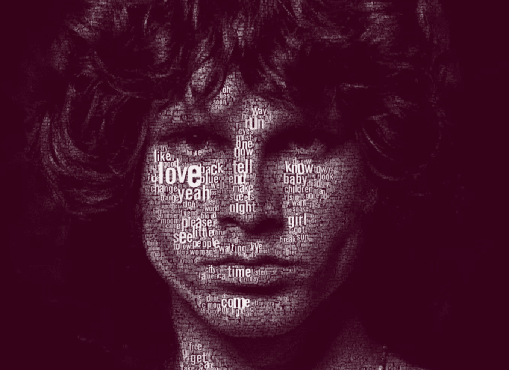
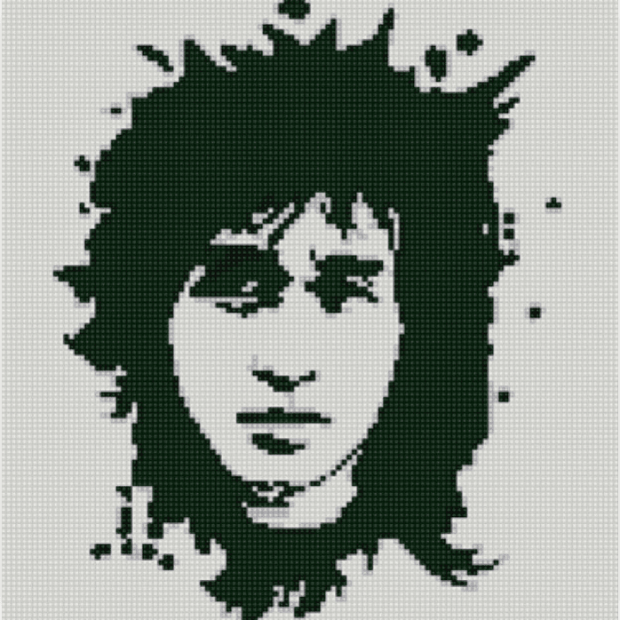

-
Фритрек и нулевой спринт: Подготовка к работе
</html>Это было самое начало пути. На этом этапе важно было проникнуться основами и настроиться на учёбу. И, возможно, подумать, как новые знания могут повлиять на ваше будущее.
Свой контент можно писать только тут, по этому поедлю на вводную часть и перейду к сути карточки.
zakrivayuschiy-teg-f. Press 'F' в память почти всех героев карточек ниже.
Джимми Хендрикс внес свой уникальный saturate в музыку. Гитара преобрела новое звучание, и начала занимать лидируищие позиции, фронт позиции, в музыкальных коллективах. До Хэндрикса музыканты больше уважали клавиши, саксофон итп.
В 2009 году журнал «Time» назвал Хендрикса величайшим гитаристом всех времён, как и журнал Rolling Stone (трижды - в своих списках величайших гитаристов всех времён). Широко признан как один из наиболее смелых и изобретательных виртуозов в истории рок-музыки. Хендрикса ещё при жизни называли феноменом и гением. Он открыл бесконечный источник возможностей нового звучания. Говоря о новшествах Хендрикса, критики подчёркивают, что он расширил диапазон и словарь электрогитары, словно изменив лицо рок-музыки. -
1 спринт: Я — чистый лист
</html>
На первых этапах мы работали со страхами и сомнениями, которые часто испытывают новички. Один из них — страх перед чистым листом. Это, конечно же, намного сложнее, чем боязнь куска бумаги. Часто за этим ощущением скрываются более глубокие вопросы: с чего начать? а вдруг будет слишком сложно? что, если я не справлюсь?
Хилель Словак заслужил себе сепию, он так же делал из красок черт пойми что. Был одим из основателей Redhot Chili Peppers и чуть не стал причиной краха коллектива.
Его стиль игры сильно повлиял на звучание ранних RHCP, поскольку пришедший ему на смену Джон Фрушанте был его фанатом. Впоследствии ему было посвящено несколько песен RHCP включая «Otherside», «Knock Me Down», «My Lovely Man», «Skinny Sweaty Man», «Taste the Pain» и «Feasting On The Flowers». -
1 спринт: А если не получится?
<CSS>Первый проект — позади! Но это всё ещё самое начало пути. Радость могла быстро померкнуть и смениться ожиданием провала. Или вы, наоборот, могли вдохновиться успехами и поверить в себя.
Джон Бонэм инвертировал игру на барабанах, достаточно послушать его барабанные соло по семнадцать минут.
Специалисты отмечали уникальную мощь его игры и чувство внутренней энергетики ритма. «Энциклопедия Британника» назвала Бонема «идеальным примером для всех барабанщиков хард-рока, которые пошли по его стопам». После смерти Бонема в 32 года Led Zeppelin распались. В 2005 году британский журнал Classic Rock поставил Бонема на первое место в списке лучших рок-барабанщиков всех времён, также как и Rolling Stone в своём списке 100 величайших барабанщиков всех времён в 2016. -
2 спринт: Погоня за идеалом
</desigions>
На этом этапе вы уже достаточно разбирались в основах вёрстки, чтобы понять, как много ещё впереди. Вы могли попытаться погнаться за идеалом и понять, что он недостижим. А, может, вы вовсе и не подвержены перфекционизму и вместо того, чтобы сделать идеально, старались просто сделать.
Легендарый Курт Кобейн, не менее легендарно поставил поставил zakrivayuschiy-teg, крыша его гаража была в самых разных hue
Кобейн считается одним из ключевых музыкантов гранжевой сцены и входит в число 100 величайших гитаристов всех времён по версии журнала Rolling Stone. В 2014 году был посмертно включён в Зал славы рок-н-ролла в составе «Нирваны». -
2 спринт: О тех, кто рядом
care Всё это время вы были не одиноки (хотя, возможно, иногда и чувствовали, что одни против целого мира). Вас окружали одногруппники, команда сопровождения и просто близкие люди, которым можно пожаловаться, если очередной макет просто так не поддавался. Осваивать что-то новое легче, когда рядом есть единомышленники, не правда ли?
Джим Моррисон, тексты его песен. да и музыка- самых разных оттенков huesepia. Легенда! Но очень загадочная.
Считается одним из самых харизматичных фронтменов в истории рок-музыки. Моррисон известен как своим характерным голосом, так и своеобразностью собственной сценической фигуры, саморазрушительным стилем жизни и своим поэтическим творчеством. Журнал Rolling Stone включил его в список 100 величайших певцов всех времён. -
3 спринт: Обходные стратегии
<support> На этом курсе вы постоянно решали разные задачи. В какой-то момент вам могло показаться, что решения просто иссякли. Значит, пришло время посмотреть на задачу под другим углом.
Виктор Робертович поставил свой закрывающий тег в отличие от всех остальных contrast в этом списке не из-за разрушительного образа жизни, а из-за рокового знакомства с Икарусом.
Группа «Кино» породила так называемый феномен «киномании»; сегодня творчество Цоя не утратило среди современных слушателей значимости и популярности. -
3 спринт: Когда опускаются руки
<lifes-style: none;>
Во время учёбы часто возникает чувство, когда не знаешь, за что хвататься. Вроде и проектную пора сдавать, и задачи хочется порешать, и в теории получше разобраться, и жизнь не забыть пожить. В такие моменты очень нужна концентрация. Вспомните, откуда вы её черпали.
Долорес написала много хитов, которе очень часто даже в караоке услышать, яракая brightness представительница списка героев этой подборки.
В возрасте десяти лет она пела в местных пабах, куда её водили дяди. Свою первую песню под названием «Calling» Долорес написала в возрасте 12 лет. -
«Сейчас я здесь»
<experience>Сейчас вы уже очень много знаете о вёрстке. Но это только начало. Во-первых, впереди ещё много материала про «красотищу». Во-вторых, с окончанием курса учёба не заканчивается. Вёрстка — это целый мир. И этот мир постоянно меняется. Познать его полностью не получится, но это тот случай, когда важен сам процесс познания. Ведь часто путь — и есть результат.
Дэвид Гилмор- единственный предствитель подборки, который все еще занимается творчеством, по этому сделаем его фото расплывчатым blur. Дэ́вид Джон Ги́лмор — британский композитор, гитарист, вокалист, один из лидеров группы Pink Floyd. 78 лет дядьке!
В 2003 году Гилмор занял 82-е место в рейтинге журнала Rolling Stone «100 величайших гитаристов всех времён по версии журнала Rolling Stone», в аналогичном списке 2011 года того же издания — 14-е место, а в списке 250 величайших гитаристов всех времён 2023 года по версии этого журнала — 28-е.